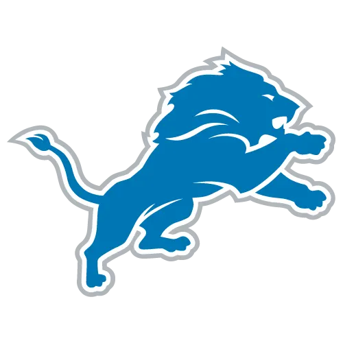

Pewter City Gym
Dave · Pick #6
The best TE room in the league and a mid-tier backfield, held back by the second-worst WR room.
One keeper. That's usually a handicap in this league — except the one keeper was Brock Bowers for a 13th-round cost, the single biggest discount anyone locked in this season. Then the draft posted the league's best raw value total: +116 net. Here's where it went — +103 of it on players who don't crack the starting lineup, including a backup quarterback and the last pick of the draft. The nine picks that actually built this lineup came in at −36.
The formula was unusual and on paper it worked perfectly: one flawless keeper instead of two decent ones, then a draft that treated the board like a clearance rack and posted the league's best value total. The bargains were just in the wrong aisle. Dak Prescott at +66 is a backup quarterback who will never start a week; Joe Mixon at +78 was the final pick of the draft. Strip out the slots that don't play and this draft reads as roughly break-even, which is how a +116 board produces the league's ninth-best lineup. The environments compound it: Kamara's Saints and Metcalf's Steelers came cheap because of where they play, and that bill comes due weekly. If even half those offenses beat Vegas's number, this was a steal. If they don't, it was cheap for a reason.
🔒 Keepers
4th in the league
Bowers for a 13th: +105, the league's best keep
📊 Draft Picks
5th in the league
+116 net, almost all of it on the bench
🏗️ Roster Build
9th in the league
9th-best lineup, no star at the top
Keepers: One Keep, One Masterpiece
AKeeper · Round 13
The best keeper value in the entire league: a top-25 player, the consensus TE1, kept for a 13th-round cost. Most managers kept two players and didn't combine for this much equity. One keep was enough.
No Keeper
Manager did not elect a keeper for this slot
Only one keeper slot used — and it out-earned six managers' entire two-player hauls. +105 ranks 4th of 10 on its own.
Draft Picks: The Clearance Rack, Wrong Aisle
B-✓ Best Pick
Fell 78 picks past his league price to the final pick of the draft — a veteran starter acquired at the absolute bottom of the board. The market faded him hard for a reason, but at pick 166 the reason is priced in twice over.
✗ Worst Pick
Taken 15 picks before his league price in Round 9 — a rookie committee back grabbed a touch early on a night this manager otherwise let everything fall. The worst pick on the league's best-value board is a compliment in disguise.
ADP Analysis
Bars above zero: the player fell past his ADP (for keepers, the discount vs. market). Bars below zero: taken earlier than his ADP. Rounds 15 and 17 (DEF, K) aren't graded. Toggle between League ADP (keeper-adjusted) and raw Market ADP.
| Rd | Player | Pos | League ADP* | Pick | Value | Verdict |
|---|---|---|---|---|---|---|
| 1 | De'Von Achane | RB | 12 | 6 | −6 | Reach |
| 2 | Alvin Kamara | RB | 23 | 15 | −8 | Reach |
| 3 | Kenneth Walker III | RB | 26 | 26 | 0 | Fair |
| 4 | DK Metcalf | WR | 34 | 35 | +1 | Fair |
| 5 | Jameson Williams | WR | 54 | 46 | −8 | Reach |
| 6 | Travis Hunter | WR | 62 | 55 | −7 | Reach |
| 7 | Emeka Egbuka | WR | 71 | 66 | −5 | Fair |
| 8 | Rashee Rice | WR | 63 | 75 | +12 | Steal |
| 9 | Cam Skattebo | RB | 101 | 86 | −15 | Reach |
| 10 | Austin Ekeler | RB | — | 95 | — | — |
| 11 | Kyler Murray | QB | 84 | 106 | +22 | Steal |
| 12 | Jaydon Blue | RB | 129 | 115 | −14 | Reach |
| 13 | Brock Bowers | TE | 21 | 126 | +105 | Keeper |
| 14 | Kansas City Chiefs | DEF | — | 135 | — | — |
| 15 | Dak Prescott | QB | 80 | 146 | +66 | Steal |
| 16 | Tyler Bass | K | — | 155 | — | — |
| 17 | Joe Mixon | RB | 88 | 166 | +78 | Steal |
*League ADP = where the player should go in this draft: market ADP adjusted for the 19 keepers, who never hit the board while their slots push every pick later. For keepers it's straight market ADP — what he'd cost in an open draft. Value = Pick − League ADP: positive means he fell to you (for keepers, the discount you're keeping him at), negative means you took him early. Verdicts allow a cushion of 5 picks or 10% of League ADP, whichever is larger — inside that window a pick is a preference, not a reach. Kickers and defenses aren't graded — everyone reaches on those.
Roster Build: Cheap, Sensible, and Nobody's Nightmare
C+Positional Value
Numbers are each player's projected value over a waiver-level starter (higher is better; 0 ≈ waiver level). ★ = projected starter. Red cells sit below waiver level. DEF and K aren't rated.
Team Reliance

Achane (~21% of roster value) is the roster's biggest bet, in the 17th-ranked implied offense the market expects to trail. For most backs that's a problem; Achane's receiving profile turns negative scripts into catches. The environment caps the team; it doesn't cap him nearly as much.
Kamara (~13% of roster value) plays for the league's worst-projected situation — 31st in implied points scored and allowed. The volume is guaranteed because nobody else in New Orleans demands the ball; the touchdowns are the problem. A floor bet wearing a ceiling player's price tag.
Kenneth Walker (~13% of roster value) sits in a middling offense with the 27th-ranked defense — shootout scripts that historically pull Seattle away from the run. The talent is real; the game flow is the enemy.
Metcalf (~8% of roster value) moved to the 26th-ranked implied offense with a strong defense — low-scoring, run-leaning games. He's the only receiver there, which guarantees targets and caps ceilings simultaneously.

Jameson Williams (~7% of roster value) is the one premium environment on this list: the 6th-ranked implied offense. He's also its fourth option. Great neighborhood, small apartment.
Bye Week Breakdown
Byes by Week
The byes spread kindly — no week benches more than two starters. Week 8 (Jameson, Bowers) and Week 10 (Walker, Rice) are the ones to plan around.